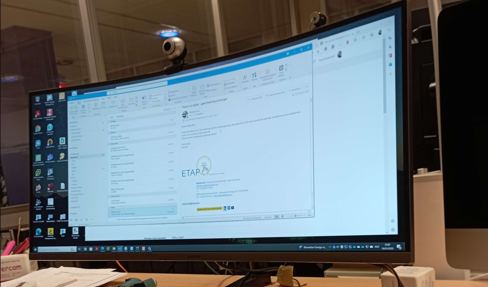

Toen ik aankwam werd ik meteen verwelkomt aan de balie en doorverwezen naar mijn bedrijfsmentor Paul Vandenbril. Nadien, heeft Paul mij een rondleiding gegeven door het bedrijf heen. Waaronder door de IT-sector, de marketing sector, verkoop, aankoop,onderhoud, Door het fabriek. Hij heeft verschillende dingen uitgelegd van hoe led-lichten gemaakt worden enzovoort. Hij en een collega hebben dan ook uitgelegd hoe ze een licht voorstellen in een huis en hoeveel licht die kan geven en hoeveel die verbruikt. Bijvoorbeeld in een demo-sectie in het bedrijf hebben ze een klasruimte om de lichten aan te tonen. Hierbij hebben ze laten zien dat hun led-lichten evenveel licht gaven maar 400W minder verbruikte dan andere lichten. Hij heeft ook de SSD's laten zien en alle computers. Nadien heeft hij ook een programma uitgelegd dat heel veel bijdrage heeft bij dit bedrijf genaamd Citrix. Kort uitgelegd is dat een programma dat je bijvoorbeeld als je thuis zit de pc van op het werk kunt gebruiken, je hebt daarvoor niets van hardware nodig en alleen grafisch want de hardware gebruik je van de pc in het bedrijf. Dit programma gebruikt iedereen in dit bedrijf. Paul heeft ook verteld dat dit het hoofdkantoor was en dat het bedrijf internationaal is met bedrijven in: Spanje, Portugal, Frankrijk, Duitsland, Nederland.
Vanaf 11 uur is Paul mensen beginnen helpen via mail met problemen, mensen uit Portugal of Spanje,... stelden hun vragen ook aan Paul. Hier legde hij ook uit hoe Mimecast werkte.Dit is een programma dat alle mails die verstuurd worden of die ze krijgen gecheckt worden. Dat ze bijvoorbeeld geen phishing mails krijgen of in het algemeen SPAM-berichten. Dit uur was hij mensen aan het helpen met problemen via mail. Waaronder problemen met de pc en uitleggen hoe je dat moet oplossen.
Hierbij een foto van een mail als voorbeeld:
Lunch, hier heb ik wat gegeten en met de collega's gekletst.
Hier hebben we verder mensen geholpen met problemen via mail maar ook daar zelf nu. Er was een probleem met een laptop met Citrix tijdens een meeting en moesten wij dat fixen. Na een tijdje is dat gelukt en lukte alles weer. ondertussen werd er ook een phishing mail gestuurd naar het IT-personeel. De meeste hadden het niet door maar hadden er nog niet opgeklikt maar mijn stagebegeleider had ondervonden dat het een phishing mail was door over de open knop de hoveren kwam het van een sharepoint en was het een bedrijf dat gehackt was.
Vanaf 14 uur was het meeting voor het IT-personeel. We moesten naar een meetingkamer met ook de baas van de IT-sector. Hier was er een Teamsmeeting met nog 1 iemand extra die van thuis werkte. Bij de meeting praten ze elks over wat ze de week ervoor hebben gedaan van werk en welke ideeën ze hebben voor het bedrijf beter te maken. Deze meeting hebben ze elke week. Het IT-personeel moeten zelf ook bedenken wat ze kunnen doen voor het bedrijf. Af en toe krijgen ze opdrachten maar meestal niet.
hier hebben we ook weer verder gedaan met de mensen te helpen. Paul heeft dan ook gebelt naar het bedrijf dat gehackt was om hun te verwittigen en berichten stuurden via hun mail. En toen was de eerste stagedag gedaan.
Ik vond het interessant om te zien dat het IT-personeel nog steeds kan vallen voor een phishingmail en ik vond de meeting wel interessant om de mensen hun ideeën te horen en wat ze die week allemaal hebben gedaan. En ook mensen helpen, als het lukt geeft het een gevoel van voldoening. Ik heb geleerd hoe Citrix en Mimecast werkt en wat je er allemaal mee kan doen. Ik vond dat het helpen van mensen wel goed ging vandaag, omdat het wel elke keer lukte. Ik heb aan mijn Familie vertelt dat ik een meeting heb gezeten en ik dat wel spannend vond. Ik zou wel nog willen leren hoe diep ze gaan in het programmeren bij ETAP.